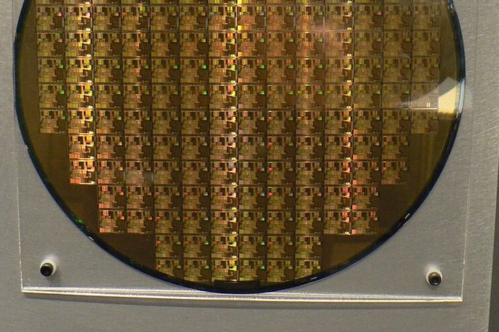
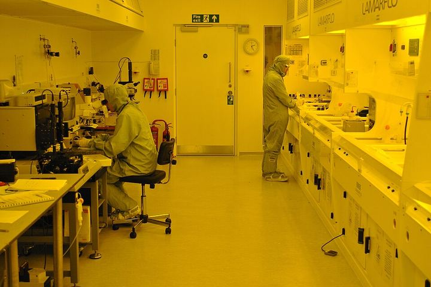
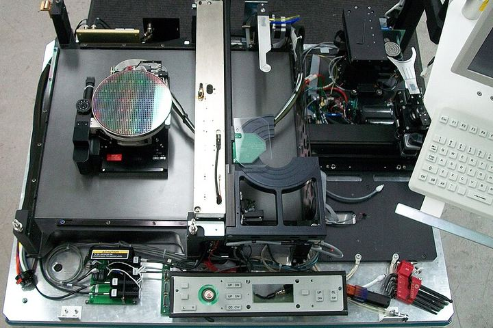
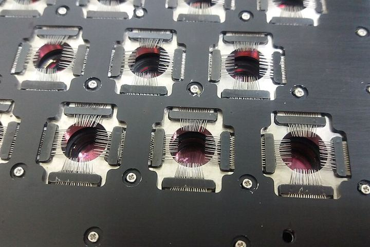

ES 335 Machine Learning · Rishi Kumar and Satyam Suman
Can a CNN learn wafer defects without backprop?
Chip factories print hundreds of chips (dies) on one silicon wafer. After testing, each wafer
gives a map of which dies passed and which failed. The shape of the failures (a ring at the edge, a
blob in the middle, a thin scratch) is a clue to what went wrong in the factory.
We built a small CNN-style model whose filters are learned with plain k-means, with no backprop
anywhere, and asked: can it sort wafer maps into 9 defect patterns, and keep working when a wafer comes in
turned or a little off-centre?
Short answer: yes, mostly. It clearly beats simple baselines, gives honest
confidence numbers, and shrugs off quarter turns. A normal backprop CNN still scores higher. Everything's
below.
A real training wafer, being tested die by die.
Macro-F1, our model0.765
95% range 0.744 to 0.783
vs best simple baseline+0.056
random forest on raw pixels, range +0.038 to +0.074
Score after a 90° turn0.766
unrotated: 0.765
vs textbook CNN−0.064
the CNN wins; we use 48× fewer learned numbers
“What's a wafer, and why would anyone sort its failures?”
A wafer is a thin disc of silicon, and the factory builds many chips on it at once. At the
end, every chip is tested, and the results make a picture of the wafer: a wafer map. The model looks at
that picture and names the pattern the failures make.
1 · The waferA thin, polished disc of silicon. Hundreds of identical chips, called
dies, are built on it side by side and cut apart at the very end.2 · The fabIn the factory (the fab), each wafer goes through a long chain of steps
that add, pattern and etch thin layers. Wafers travel through it together in batches called lots.3 · The testA machine called a prober touches each die with fine needles and runs an
electrical test. Every die gets one answer: pass or fail.4 · The wafer mapWrite every answer in its place and you get a wafer map. WM-811K, our
dataset, has 811,457 of them.
The same four steps, in real life

A real waferAn 8-inch silicon wafer covered in identical chips.
Photo: Naotake Murayama, CC BY 2.0, via
Wikimedia Commons (cropped)

A cleanroomLithography rooms are lit yellow so the light-sensitive coating isn't exposed by accident.
Photo: O. Usher, UCL Mathematical and Physical Sciences, CC BY 2.0, via
Wikimedia Commons (cropped)

A wafer proberOpened up for service: the wafer sits on the stage that steps it under the needles.
Photo: Ixnayonthetimmay, CC BY-SA 3.0, via
Wikimedia Commons (cropped; this version is CC BY-SA 3.0 too)

A probe cardThe fine needles that touch each die's pads during the test.
Photo: Jasycheng, CC BY-SA 4.0, via
Wikimedia Commons (resized; this version is CC BY-SA 4.0 too)
From a wafer to a wafer map
not on the waferdie passeddie failed
The prober visits one die at a time; each answer lands in the same spot on the map. The map is a real
training wafer from WM-811K, drawn on a coarser grid so each die is easy to see.
Why care about the pattern? Failures that form a shape usually share a cause. A ring of
failures at the edge and a blob in the middle point engineers to different parts of the process. Sorting maps
by pattern by hand is slow, so we want a model to do the first pass.
Meet the 9 patterns. Click a card to see another wafer of the same kind.
Real training wafers. Notice how much a class varies: no two Scratch wafers look alike. Pattern names
come from the dataset's own labels. We learn to recognise the shape. We don't learn, and don't claim, what
caused it. class_counts.csv
The project in seven lines
Question
Can a one-layer CNN-style pipeline whose filters are learned without backprop (k-means
on small patches) sort wafer maps into 9 defect patterns, and keep working when a wafer is rotated or a
little off-centre?
One row (unit)
One wafer map: a grid of dies, 0 = off the wafer, 1 = pass, 2 = fail.
Target
One of 9 labels: Center, Donut, Edge-Loc, Edge-Ring, Loc, Near-full, Random, Scratch, none.
When the prediction is made
Right after a wafer finishes testing, when its map exists.
What the model sees then
Only the map. Lot name, die size and wafer number are never features. The
lot name is used for one thing: keeping batches together when we split the data (S3).
Main score
Macro-F1: the plain average of the 9 per-class F1 scores. S7 explains why.
Limits of the claim
Labeled wafers only; one public dataset from one source; a class mix with far
more defects than a real fab (S14); a pattern label is not a root cause.
Want the details? Questions you might have
Why not just use a normal CNN?
That's the point of the project: we want to see how far you get with the CNN structure (sliding
filters, pooling) when the filters come from a simple, fast, explainable method instead of backprop. We do
train a textbook CNN at the end as a yardstick (S12).
Is this a real factory?
It's a public dataset of real wafer maps (WM-811K). We don't know which factory, and we don't have process
data, so we can't link patterns to causes.
What do F1 and macro-F1 mean?
For one class, F1 balances two questions: of the wafers we flagged as that class, how many really were
(precision), and of the real ones, how many did we catch (recall). Macro-F1 averages the 9 class scores
equally, so a rare class counts as much as a common one.
S2 · Data understanding
The data, and what the audit found
“811,457 wafers sounds like a lot. How many could you actually use?”
35,519. Most of the file has no
label, and most labeled wafers are clean. We kept every wafer with a defect and a random sample of clean ones.
We used WM-811K, a public set of 811,457 real wafer
maps published with a 2015 paper by Wu, Jang and Chen (IEEE Transactions on Semiconductor Manufacturing).
It's free on Kaggle as one 2 GB file,
LSWMD.pkl. We don't re-host it. Before building anything, we went through it properly.
35,519our final sample (10,000 random "none" + all defects)
Why throw away 137,431 clean wafers? If we kept them
all, 85% of the training data would say "nothing to see
here". The model would learn to shout "none" and still look accurate, and training would get about
5× slower for very little new information. So we kept every
defect wafer and a random 10,000 clean ones (seed 42). The catch, which
we come back to in section 14: our test set has more defects than a real factory, so precision
here is higher than it would be on a real line.
Near-full is 65× rarer than Edge-Ring
That gap is why we score with macro-F1 and give rare classes more weight in training. Switch to all
labeled wafers and the none bar swallows the chart.
audit_summary.json · class_counts
The important columns
Column
What it is
Do we use it?
waferMap
the die grid (0 off, 1 pass, 2 fail)
Yes, it's the only model input
failureType
the pattern label (missing for 79%)
Yes, as the target
lotName
which batch (cassette) the wafer came from
Only to keep batches together in the split
waferIndex
position in the lot
No
dieSize
number of dies on the wafer
No (we checked it matches the map: true for all 811,457)
trianTestLabel
the dataset's own train/test tag (typo is in the original)
No, see the findings below
What the audit found, and what we did
What we found
What we did
811,457 wafers, only 172,950 (21%) labeled
Labeled wafers only
147,431 of those are none (85%)
Keep all defects + 10,000 random none
Wafers come in lots (batches of up to 25). 21,762 of the 46,293 lots in the file are full 25-wafer lots
Split by lot, never by single wafer (S3)
In our sample, 215 wafers share an identical map with another wafer: 107 distinct maps, every one spread over several lots
Lots that share an identical map are treated as one group, so a copy can't end up on both sides
3 of those identical maps carry two different labels (Center vs Loc once, Edge-Loc vs Edge-Ring twice)
Kept as they are. It tells us the labels have a bit of noise
The dataset's own train/test tag is lot-safe (0 shared lots) but lopsided: 88% of Edge-Ring is in its train part, but only 25% of none
Not used. We made our own split with a similar class mix on both sides
632 different map sizes in the whole file; 338 in our sample, from 18 to 212 dies on a side (median longest side 38)
Shrink everything to 32×32 by picking the nearest die (S4)
0 lot names missing
Nothing to fix
The smallest and the biggest map, with the same die size on screen
Two training wafers: the smallest grid in our sample (26×25, Edge-Loc)
and the biggest (153×187, Edge-Ring). The big grid has
44× more cells. The full file has a few odder shapes, from a
15×3 sliver up to
300×202.
Access limits
The data is public on Kaggle, but you need a free Kaggle account to download it. We don't redistribute it,
and data/ is gitignored.
It's an old Python 2 pickle. Our loader (src/data_loader.py) reads it with latin1
text encoding and patches an old pandas module name.
No personal data, no passwords or keys anywhere in the project.
Want the details? Questions you might have
Why not use the unlabeled 79%?
We can't check a prediction without a label, and we didn't want to guess labels. It's a limitation: we
can't say how the model behaves on that majority.
Why not use the dataset's own train/test split?
It keeps lots apart (good), but 88% of
Edge-Ring wafers sit in its training part and 75% of
none sit in its test part. A test set that lopsided measures the class mix more than the model.
Do 10,000 none wafers make the model biased?
It changes precision (S14), not recall. We say so.
S3 · Evaluation design
How we split the data: by lot
“Why not just shuffle the wafers and split 80/20?”
Because wafers from the same batch look alike, so the model would get a sneak peek at the
test. We keep whole batches together instead.
What's a lot? Wafers are made in batches called lots, up to 25 at a time. Wafers in one lot go
through the same machines, on the same day, with the same settings. So they tend to fail in the same way.
Whatever a machine does to a lot on its pass, it does to every wafer in it.
Why does that matter? Look at the top row below: six wafers from one lot. Now the bottom row:
six wafers with the same label, each from a different lot. The top row is like six photos of the same person.
The bottom row is six different people.
Notice how the top row repeats the same rim, the same weak spots, even the same scatter. The
bottom row shares only the label.
Training wafers. The comparison wafers in the last four tabs were drawn at random.
Two wafers from one lot overlap far more than two from different lots
Overlap = failing dies in both ÷ failing dies in either (intersection over union), on cleaned 32×32
maps of training wafers, median over pairs. Same lot: wafers next to each other in a lot. Different lots: 4,000
random same-class pairs. site_stats.json · overlap
If we shuffled single wafers into train and test, most test wafers would have a "sibling" from the same lot in
training. The model could score well just by remembering the lot's look, not by learning what Edge-Ring means.
On a new lot it hasn't seen, that score would fall. So we keep whole lots together: a lot is either all in
training or all in test.
Why not this one line?
train, test = train_test_split(wafers, test_size=0.20, shuffle=True) # what most tutorials do
This line treats every wafer as a stranger to every other wafer. Ours aren't strangers. It would put lot-mates
on both sides. What we use instead:
# 1. Wafers that share a lot, or share an identical map, are joined into one group
# 2. 20% of the groups go to the locked test set
test_groups = GroupShuffleSplit(test_size=0.20, random_state=42)
# 3. The other 80% get 5 validation folds, keeping groups whole and the class mix even
folds = StratifiedGroupKFold(n_splits=5, shuffle=True, random_state=42)
Split it yourself: 40 real lots from the training data
traintesthas a sibling on the other side
Each tile is one lot; each dot is one wafer in it. Press either button again for a new random
draw.
The numbers that prove the point
86%of validation wafers have a lot-mate in training, with naive random folds (average over 5 folds)
0%with our lot-grouped folds
86%of test wafers have a lot-mate in training, with the one-line 80/20 split (seed 42)
0%with our locked test set
Computed from splits/project_splits.csv, which keeps both our folds and the naive ones.
project_splits.csv
What would go wrong otherwise
Scores look better than they really are, and we'd never know. We measured it on the two pixel baselines:
naive folds scored 0.589 instead
of 0.579 for logistic regression, and
0.711 instead of
0.696 for the random forest.
log.csv · B2-*-random-split
Honest take: here the inflation is small, about one or two points. We still block it, because (1) we didn't
know it would be small until we measured it, (2) one or two points is about the size of the gaps we care about
between methods, and (3) with leakage you can never be sure your test means anything.
The final split
Wafers
Lots
Notes
Locked test set
7,236 (20.4%)
2,051
untouched until the one final run
Training part
28,283
8,176
split into 5 folds of about 5,657 wafers each
Groups (lots joined by identical maps)
10,119 in total
median 2 wafers, biggest 31; 65 groups join more than one lot (up to 7)
Five validation rounds, every fold with the same class mix
"Stratified" means every fold gets the same class mix, so a fold can't end up with almost no Near-full
wafers. split_summary.json · folds
We also wrote a checker (python main.py check) that runs 21 tests on the split,
including one that points it at a naive random fold to prove it catches a real leak.
Want the details? How lots are joined into groups, and questions you might haveUnion-find in one picture: dots are wafers. A line joins two dots if they share a lot (solid) or
share an identical map (dashed). Every connected cluster becomes one group, and a group goes to one side
only.
Isn't 20% test too small for Near-full?
Yes, the test has only 26 Near-full
wafers, so its score has a wide error bar (0.79 to
0.97). We show the error bar instead of hiding it.
Why 5 folds?
Every training wafer gets used for validation exactly once, and we get a spread (how much the score wobbles
fold to fold) to tell real gains from noise.
Why are the folds stratified?
So every fold has a similar class mix; otherwise a fold could end up with almost no Near-full wafers.
S4 · Preprocessing
Preprocessing, step by step
“The maps are all different sizes and full of specks. How do you make them comparable?”
Four steps, in this order: look at the raw map, switch off lonely failing dies, shrink to
32×32, and split it into a fail map and a wafer mask.
Raw maps are messy: every size from tiny to huge, and sprinkled with lone failing dies that are usually just
noise. Even a perfectly healthy wafer has them. Every die is tested electrically, and a few fail for one-off
reasons that leave no pattern.
A healthy wafer is not a clean wafer
passedfailedfailed, no failing neighbour
A training wafer labeled none. A model looking through small windows can mistake a chance
cluster of these specks for the start of a real defect.
Raw
Clean up
Shrink to 32×32
Fail map + mask
Everything here runs in your browser on real training wafers, with the same rules as
src/preprocessing.py. Try the Scratch wafer, step 2, then switch to Median.
The two cleanup rules, on a tiny wafer
Isolated (ours): switch a failing die off only if none of its 8 neighbours fails.
Median (textbook): keep a die failing only if at least 5 of the 9 dies in its 3×3 box fail.
Notice: a die on a one-die-wide line has 2 failing neighbours. That's enough for our rule (it
needs 1) and never enough for the median (it needs 4 neighbours plus itself).
Why not the median filter? It erases the scratch
Inspect one die
Hover over the raw map, or tap it, to pick a die.
Real Scratch training wafers. On a typical Scratch training wafer the median filter removes
92% of the failing dies; our rule
removes 36%.
Our rule on all nine patterns: the shapes stay, the specks go
keptremoved
“Wait. Won't you delete the Random class, which is all about scattered failures?”
Good worry. So before cleaning, we save two numbers for every wafer:
Failing share: what fraction of the wafer's dies failed.
Removed share: what fraction of the failures the cleanup removed.
These two go straight into the classifier next to the picture features, so the information survives even if
the picture loses it.
Then we checked how much of a problem it really was. It turns out Random wafers are so crowded (about
47% of dies fail) that almost every
failing die has a failing neighbour. Our isolated cleanup removes only
1.5% of a typical Random wafer's
failures. The median filter would have removed 43%.
So the gentle cleanup already protects Random, and the two numbers are a safety net on top. They also help on
their own: Near-full wafers are about 88%
failing, and clean wafers lose about 43%
of their few failures to cleanup (they were mostly specks).
Yes. Validation macro-F1: no cleanup 0.729,
isolated (ours) 0.753, median
0.784. The median filter scores
higher overall, and costs us scratches; S8 and S13 tell that story.
log.csv · P3-ablation-denoise-*
Why 32×32, and why clean before shrinking?
32×32 is small enough to be fast and to run in a browser, big enough to keep the patterns. We tested 64×64 on
validation: 0.766 against
0.753, a small gain for 4× the pixels. We
stuck with the planned 32×32. We clean before shrinking because "no failing neighbour" only means
something on the real grid. Shrink first, and a thin scratch becomes a dotted line whose dots all look lonely.
One real Scratch training wafer, both orders.
Leak-safety note
These four steps have nothing to learn: each wafer is cleaned and shrunk on its own, using only its own dies.
So they can't leak information between train and test. The steps that do learn something (patch
statistics, whitening, filters, scaling, classifier, calibration) come in S6 and are fitted on training folds
only.
Want the details? Questions you might have
Why does the 32×32 Scratch look broken up?
Picking the nearest die skips some rows and columns, so a thin diagonal line can lose dies. It's a real cost
of shrinking, and part of why Scratch is our weakest class (S11).
Why not keep the original sizes?
Filters and pooling need the same grid for every wafer, and the biggest map has
44× more cells than the smallest.
Why pick the nearest die instead of blending?
Blending would invent "half-failed" dies that don't exist.
S5 · Baselines
Baselines: the bar we have to beat
“Is a macro-F1 of 0.75 good?”
Depends on what simple models get. 0.75 is great if guessing gets 0.05, and bad if a
one-liner gets 0.74. So before the real model, we built four simple ones.
A random forest on raw pixels is the one to beat
Validation macro-F1 over 5 lot-grouped folds; whiskers are ± one fold spread. The blue line is our
model on the same folds. Hover a row for what the baseline does.
log.csv · B0-* to B3-*
What would go wrong otherwise
Accuracy alone would fool you: always saying the biggest class gets
28% accuracy but a macro-F1 of
0.049. And a random forest on raw pixels is already
decent at 0.696. Our model has to beat
that, not just beat guessing.
Want the details? Questions you might have
Why compare against logistic regression on pixels if the forest is stronger?
Because it's the same classifier we use at the end. The gap between them shows exactly what our features
add (S9: +0.205 on test).
S6 · Our method
Our method: a CNN with no backprop
“What does 'a CNN without backprop' actually mean?”
Same shape as a CNN, different learning. We kept sliding filters, an activation
and pooling, and learned each part with a classic, simple tool instead of backprop.
A normal CNN slides small filters over an image, keeps the strong responses, pools them, and feeds the result to
a classifier. It learns the filters with backprop: millions of tiny nudges. Why bother doing it differently? It
trains in minutes on a laptop, it has very few learned numbers, and you can look at every part and see what it
does.
Every CNN part, and what we use instead
CNN part
Normal CNN
Ours
Why this choice
Input
image
32×32 fail map + mask + 2 summary numbers
S4
Filters
learned by backprop
k-means on 200,000 small 5×5 patches
finds the most common little shapes without labels
Convolution
slide filters over image
same: every 5×5 spot on the wafer (a matrix multiply, "im2col")
Activation
ReLU
triangle: how much closer a patch is to this filter than average
gives sparse, mostly-zero responses
Rotation
learned (sort of) from data
each filter tried at 0/90/180/270°, keep the strongest
a scratch is a scratch at any angle
Pooling
max-pool into a grid
average inside 4 rings + the whole wafer
the patterns are about how far from the centre
Classifier
dense layers
logistic regression, balanced class weights, plus temperature scaling
Boxes with a learns tag fit numbers, and they are fitted on training
folds only. In the final run, on all training wafers and never on test wafers.
Filter explorer: how a picture becomes 162 numbers
1. What the model sees
2. Pick one of the 32 filters
Blue cells lean towards a failing die there, red cells towards a passing one.
3. Where it fires
4. Averaged inside each ring
Computed live in your browser. Dashed circles are the ring borders.
Why rings?
Most patterns are about where the failures sit: in the middle (Center), around the rim (Edge-Ring), in
a ring between the two (Donut). Rings measure "how far from the centre" and don't care which way the wafer is
turned. We tested the obvious alternative, 4 quadrants: it scored
0.665 instead of
0.753 on validation, the biggest drop of any
change we tried.
Why logistic regression, when the random forest scored slightly higher on validation?
The forest got 0.761 against our
0.753. Three reasons we still picked logistic
regression: (1) it gives honest probabilities after temperature scaling, which a factory needs to decide what to
send to a human; (2) it's tiny (9 × 162 weights), so it runs in a browser, as you'll see below; (3) it's the same
classifier as the B2 baseline, so the comparison isolates what our features add.
Try it: draw a wafer and watch the model read it
Drag on the wafer to mark failing dies. The whole pipeline (cleanup, 32 filters × 4
turns, rings, logistic regression, temperature) runs in your browser.
Leak-safety callout
Patch statistics, whitening, the filters, the scaler, the classifier and the temperature are all fitted on
training folds only. In the final run, on all training wafers and never on test wafers.
Want the details? The formulas
Triangle activation.a_k = max(0, mean_j(d_j) − d_k), where d_k is the
distance from the whitened patch to filter k. A patch closer than average to filter k gets a positive score;
the rest get zero.
ZCA whitening.W = V diag(1/sqrt(λ + 0.1)) Vᵀ from the eigenvalues λ and
eigenvectors V of the patch covariance. It undoes "neighbouring dies look alike" so k-means finds edges and
lines instead of blurry blobs.
Rings. Radii at 0-25-50-75-100% of the half-width; the fifth region is the whole wafer.
Mask-aware mean. Each ring average counts on-wafer dies only, so the empty corners of the
square never dilute it.
Temperature scaling. Probabilities are softmax(scores / T); T is picked on three
inner folds of the training data. Dividing every score by T never changes which class wins.
S7 · Evaluation design
How we kept the test honest
“How do I know you didn't tune the model on the test set?”
We froze the recipe in git before the test set was loaded, and the test script refuses to
run twice. All tuning happened on the 5 validation folds.
Split frozen20% of lot groups locked away; 21 leak checks.
BaselinesB0 to B3 on the validation folds.
Pipeline + 7 ablations3 filter types × 4 classifiers, one change at a time. Validation only.
Post-hoc looksMedian cleanup and a textbook CNN. Labelled, never used to change the model.
The git history shows the freeze commit landing before the results commit, on
2026-11-17. Click a hash to open it on GitHub.
What we froze
Recipe: k-means, K = 32, rotation on, ring pooling,
32×32, isolated cleanup.
Main model: calibrated logistic regression. Second model: linear SVM. Baselines: B2 logistic and B2 random
forest. Bootstrap: 1,000 rounds, seed 42, by test lot. final_config.json
The scores we report, and why each one
Metric
Plain meaning
Why we use it
Macro-F1 (main)
F1 for each class, then a plain average
Every class counts the same. Near-full (149 wafers) matters as much as Edge-Ring (9,680)
Per-class precision, recall, F1
For one class: of the alarms, how many were right; of the real ones, how many we caught
Shows which patterns work
Accuracy
share of wafers labelled right
Shown, but never alone: "always say the biggest class" gets 28%
ECE (calibration error)
gap between how sure the model says it is and how often it's right
A factory acts on confidence
PR-AUC per class
how well the model ranks one class above the rest
Works well for rare classes
Error bars: the lot bootstrap
One test score is one roll of the dice. To see how much it could wobble, we redraw the test set 1,000 times:
each time we pick 2,051 lots at random with replacement (some
lots twice, some not at all), score the model, and keep the middle 95% of the 1,000 scores. We redraw whole
lots, not single wafers, because wafers from one lot are alike, so treating them as independent would make the
error bars too narrow.
To compare two models, we use the same 1,000 redraws for both and look at the gap in each draw. If
the middle 95% of the gaps stays above zero, the win is not just luck of the draw.
Watch the bootstrap
Recomputed in your browser from the saved test predictions
(final_test_predictions.csv). Your random
draws differ from ours, so expect a range close to, not exactly, the logged
0.744 to 0.783.
What the bootstrap can and can't tell you
It tells us how much the score would move with a different set of lots from the same source. It can't
tell us how the model does in a different factory, with a different class mix, or on the
79% of wafers with no label.
S8 · Validation results
Validation results and ablations
“How did you pick this recipe, and what is each part worth?”
On the 5 validation folds, one change at a time. Rings and rotation carry the
method. Three changes scored a little higher, and we say which and why we didn't switch.
Every filter type beats the best baseline, except with Ridge
Validation macro-F1 ± fold spread. Darker = higher. The outlined cell is the planned recipe. Best
baseline: 0.696.
log.csv · P3-*
Rings matter most. Click a row for what it means.
Validation macro-F1 for each one-at-a-time change, linked back to our recipe
(0.753); whiskers are ± fold spread.
log.csv · P3-ablation-*
Fold spread for all of these is small, so the four drops at the top are clearly real. Three changes scored
higher than our recipe. We didn't switch to them before the test, on purpose: the recipe was planned in advance,
and picking every winner on the same 5 folds starts to tune the model to those folds.
final_config.json records why we kept K = 32 (a small feature vector that runs in a browser) and
isolated cleanup (it keeps scratches). It records nothing for 64×64; we stuck with the planned size.
The surprise: random filters beat our k-means filters
We ran the check properly: same 5 folds, same pipeline, only the filters swapped for random ones, then 1,000
paired lot redraws.
k-means: 0.754 · random: 0.769 ·
gap +0.015 (95% range +0.007 to +0.023)
Random was better in 5 of 5 folds and in
100% of the 1,000 redraws.
What this means: the strength of the model is the structure: sliding small filters,
trying 4 orientations, and pooling in rings. Which exact filters you slide matters less. We kept k-means
because its filters are readable (spots and lines you can see) and because the recipe was frozen before the
test. We don't claim they're more accurate.
k-means scores 0.754 here and
0.753 in the grid above; k-means uses several
CPU threads, so reruns can move by about 0.001. filter_check.json
S9 · Final results
Final results
The one test run. We trained the frozen recipe on all
28,283 training wafers and scored it, once, on
7,236 test wafers from 2,051
lots it had never seen. Numbers in brackets are the 95% range from 1,000 lot redraws.
We beat both pixel baselines, tie with the SVM, and lose to the CNN
Our macro-F1 minus each other model's, on the same 1,000 lot redraws. A range that stays clear of the
zero line is a real gap; one that crosses it is a tie.
final_test.json · final_logreg_minus
Easy patterns are solved, thin ones aren't
Test F1 per class. The bar through our dot is its 95% range. Hover for precision and recall.
final_test_predictions.csv
Our confidence numbers are honest; the forest's aren't
Expected calibration error on the test set (lower is better). When our model says 90% sure, it's
right about 90% of the time. The forest says 90% when it's often much less sure than that.
Takeaway
We beat every simple baseline, and the gap to the best one
(+0.056) is well clear of luck.
Our probabilities are honest (ECE 0.025;
the forest's is about ten times worse).
Easy patterns are solved, thin ones aren't. Edge-Ring
0.96, but Scratch
0.39 and Loc
0.56 (S11 shows why).
The validation score (0.753) and the
test score (0.765) agree, so we didn't fool
ourselves during tuning.
A backprop CNN is still better by about 0.06 (S12).
“What happens if a wafer comes in turned, or off-centre?”
Turn it a quarter turn and our score doesn't move. Slide it and we lose much less than
anyone else. In-between angles cost everyone, us included.
Rotation playground
ourstextbook CNNrandom forest on pixelslogistic on pixels
Test wafers, nothing refit. We rotate the 32×32 maps. The curve is test macro-F1 for
every model at every angle; quarter turns are shaded.
phase4_analysis.json · rotation_test
At quarter turns we score the same as unturned (0.766,
0.767, 0.764 against
0.765). That's by design: rings don't care about direction, and
every filter is tried 4 ways. The pixel models lose 5 to 12 points, and even the CNN loses 2 to 4. In-between
angles are harder for everyone: a 45° turn on a square grid moves dies around, and we drop to
0.673.
One honest detail: quarter turns are nearly exact, not perfectly exact. The whitening step learns an
average patch that isn't perfectly symmetric, so a 90° turn moves the features a tiny bit (the score moves by
about 0.002). The CNN is still higher than us at every angle. What we win on is how little we drop, not
the score itself.
Slide a wafer 3 pixels: we lose 0.08, pixel models lose up to 0.41
ourstextbook CNNrandom forestlogistic
Each point averages four directions. At 3 pixels: ours 0.683,
CNN 0.624, forest 0.425,
logistic 0.150. To the pixel models every pixel is a fixed slot.
phase4_analysis.json · shift_test
With 5% of the lots we already beat logistic regression on pixels trained on 100%
ourslogistic regression on pixels
Validation macro-F1 when training on a share of the training lots (filters refit every time). The
curve flattens after 25%, so more of the same data would help only a little. At 1%, the random draws happened to
contain no Near-full wafers, so the 1% point understates what that much data can do. We kept the draws random on
purpose. Note it's logistic on pixels: the forest reaches
0.696 on 100%, more than our 5% point.
phase4_analysis.json · learning_validation
S11 · Errors
Where it goes wrong
“Which wafers does it get wrong, and do the mistakes make sense?”
Scratch and Loc are each other's favourite mistake. Big, wide patterns are where
we do best.
Rows: true label. Columns: predicted. Numbers are the percent of each row. Click any cell.
Locked test set, main model. Example wafers are the 32×32 maps the model saw.
final_test_predictions.csv
Our two weak classes, Scratch and Loc, are each other's favourite mistake. Through a 5×5 window, a short scratch
and a small blob look alike, and the 32×32 shrink can break a thin line into dashes (S4). Clean wafers with a few
specks in a row also get called Scratch. The big, wide patterns (Edge-Ring, Near-full, Random, Center) are where
we do best.
The 12 most confident mistakes
These are the model's most confident mistakes. Looking at them, some we'd argue about
ourselves. Remember 3 maps in the
data carry two different labels, so the labels aren't perfect either.
phase4_analysis.json · mistakes_test
For raw score, yes: the CNN wins clearly. We get about
92% of its macro-F1 with
48× fewer learned numbers, and steadier behaviour when wafers are
turned or slid.
To see how far a no-backprop model gets, we also trained a plain textbook CNN with backprop: 3 × (3×3
convolution + ReLU + max-pool) with 16, 32 and 64 channels, a 128-unit dense layer, dropout 0.3, Adam, class
weights. Same inputs (fail map + mask), same split. Its number of training rounds
(29 of a maximum 30)
was picked on the validation folds, and it was scored on the test set once.
The best round was 29 of
30, so it might do a little better with more training. We left
the cap as planned. Training took 273 seconds on all training
wafers. The validation number is slightly optimistic, because the round was picked on the same folds.
The CNN wins on score, clearly (gap 0.047 to
0.081). Where it gains most: Loc
(0.754 vs 0.560)
and Donut (0.856 vs
0.695). We're ahead on Near-full
(0.897 vs 0.847).
S13 · The denoise trade-off post-hoc: asked for after the final test, not used to pick a model
The denoise trade-off
“Median cleanup scored higher on validation. Does it hold on the test set, and what does it cost?”
It holds, and it costs scratches. Median wins on average and catches fewer real
scratches.
Median wins on average, mostly by cleaning up Loc and clean wafers. But it erases thin lines: it catches
60 of every 100 real scratches instead of
71. Edge-Ring and Random drop too.
Which is better depends on what a factory cares about most. If missing a scratch is
expensive, isolated. If the overall average matters more, median. We kept our planned model, because we picked
it before the test and only score the test once.
S14 · What happens in a real fab
What happens in a real fab
“Your test set is mostly defects. A real line is mostly clean wafers. Does that change anything?”
Recall stays the same, precision drops a lot. More clean wafers means more chances
for a false alarm.
Our test set is 27% clean wafers. Among real labeled
wafers, clean ones are 85%. We didn't retrain anything.
We took the model's test mistake rates (of the real Scratch wafers, what share went where) and replayed them at
the real class mix.
Slide from our test mix to a real fab's mix
our test mixreal labeled mix
clean wafers
macro-F1
Scratch alarms that are real
Precision for class j = sharej × rate[j][j] ÷ Σi sharei × rate[i][j],
where rate[i][j] is the share of true class i that we called j. Every class share is a straight blend between
the two ends. real_world_precision.csv
Our test mix
Real labeled mix
Macro-F1
0.765
0.646
Scratch precision
0.267
0.055 (about 1 in 18 Scratch alarms is real)
Center precision
0.882
0.576
Edge-Loc precision
0.788
0.358
Loc precision
0.673
0.265
Edge-Ring precision
0.978
0.917
Clean wafers flagged as some defect
19%
19% (doesn't depend on the mix)
So this model is a good first filter in front of a human, not a replacement for one. It throws
away most clean wafers and catches most defects, and a person checks what it flags.
S15 · Limitations
Limitations, and what we do NOT claim
“Where would you not trust this?”
Ten places. Each one is a short card; several link to the section with the
evidence.
Our test has far more defects than a real fab. Precision drops a lot at the real mix: macro-F1
0.646 instead of
0.765 (S14).
Scratch and Loc are weak (F1 0.388 and
0.560). They look alike through 5×5 windows (S11).
Rotation is nearly exact at quarter turns, not perfectly exact (about ±0.002). In-between angles cost up
to about 0.09, worst at 45° (S10).
The learned filters aren't why it works. Random filters did better on validation (S8).
Labels have some noise (3
identical maps with conflicting labels), and 79% of the
data has no label, so we don't know how the model behaves on the unlabeled majority.
One dataset, one source. We don't claim it works on another factory's maps without checking.
The 1% learning-curve point has no Near-full wafers (S10).
Near-full and Donut have few test wafers (26
and 92), so their scores have wide error bars.
We used the test set more than once, in a labelled way. The main result was scored once; the median
comparison and the CNN came after and are marked post-hoc. Neither was used to change the main model.
A pattern is not a cause. The model recognises shapes. It says nothing about which machine or step caused
them; we have no process data.
What we'd do next
Combine the validation winners (K = 64, median cleanup) and re-check on validation.
Try stacking two filter layers.
Use class-guaranteed sampling for the learning curve.
Test on another wafer dataset.
S16 · Reproducibility
Run it yourself
“Can I get your numbers on my own machine?”
Yes: one download, one install, then one command per step.
Checks the dataset loads with the expected row counts
~1 min
python main.py audit
Data audit, builds the 35,519-wafer sample
~1 min
python main.py splits
Makes and freezes the lot-grouped split
~1 min
python main.py check
21 leak checks on the split
seconds
python main.py baselines
B0 to B3 on validation
~2 min
python main.py pipeline
3 filter types × 4 classifiers on validation
~17 min
python main.py tuning
7 one-change ablations on validation
~40 min
python main.py filter-check
Paired k-means vs random filters, validation
~10 min
python main.py final-test
The one test run. Refuses to run twice
~2.5 min
python main.py analysis
Rotation, shift, learning curve, errors, filters
~32 min
python main.py posthoc-median
Post-hoc median vs isolated cleanup on test
~1.5 min
python main.py reference-cnn
Textbook CNN, rounds picked on validation, test once
~25 min
python main.py real-world-precision
Precision replayed at real class shares
seconds
python main.py site-data
Exports the wafers and numbers this page shows
~4 min
Click a command to copy it. Every logged result is a row in
experiments/log.csv.
Seeds are fixed (42). k-means uses several CPU threads, so a rerun can move a score by about 0.001, much less
than the fold spread.
final-test and reference-cnn refuse to run twice. To reproduce from zero, delete
experiments/final_test.json and experiments/reference_cnn.json first.
No API keys, passwords or private data anywhere in the project.
S17 · Team
Team, contributions, AI disclosure
Each of us answers the same five questions: what we built, one key choice, how we checked it, one
limitation, and one small change we can reason about. Result numbers are read from the data files like everywhere
else on this page; facts about how the work went link to the commit that records them.
Rishi Kumar
What I built
Reproduced same results on my laptop to check reproducibility : I pinned exact package versions after a fresh install moved
the random-forest baseline from 0.6949 to 0.6957. adf8cf5
I checked the dataset's own split : WM-811K gives its own train/test column. It shares no
lots, but the classes are lopsided: 88% of Edge-Ring sits in its
training half, against only 25% of none. That's why it was decided to
built our own split. 753ca6e
The leak checker : I recorded group and duplicate stats
(107 identical maps over
215 wafers, 3
with clashing labels) and wrote python main.py check, which stops with an error if any lot,
group or identical map sits on both sides. To test the checker I gave it random folds that leak on purpose:
it caught 2,823 of 3,491 lots. 81ec02c149beea
Fixed baseline B3 : It trained on 0/1/2 maps but predicted on 0/1 maps, so its 0.358 meant
nothing. Fixed, it scores 0.610. c4c929b
The evaluation tools (lot bootstrap, calibration error, rotate and shift), the
frozen recipe, the run-once final test, the rotation / shift / learning-curve / error analysis, the post-hoc
median look, the textbook CNN, the random-filter check, real-fab precision and the README.
3359471f4d5c320f3bc16abd6e370fd7984
This website: all 17 sections, the model that runs in the browser, and the script that
writes its data. All the what should be in the website part. (scripts/11_site_data.py). 790e947
One key choice I made and why
Freeze first, then test once : Before the test set
was ever loaded, I wrote the recipe into final_config.json and pushed it (commit
9bc9713, 04:39). The results were
pushed 04:46 (f4d5c32), and the
script refuses to run a second time. Why: if you peek at the test and then tweak, it stops being a fair exam.
I also kept the gentle isolated cleanup over median, because on validation median cut Scratch Recall from
0.711 to
0.596.
How I evaluated it
Macro-F1, so a rare pattern like Near-full counts as much as none.
For the uncertainty, 1,000 bootstrap rounds that resample whole test lots
(2,051 of them), not single wafers, because wafers in one lot look alike. Our
model: 0.765 (0.744 to
0.783). Against the random forest:
+0.056 (+0.038 to
+0.074), a range that never crosses zero. Calibration error
0.025 against the forest's 0.240.
Then stress tests: every 15° turn, shifts of 1 to 3 pixels, a learning curve, and a textbook CNN, which beats
us by 0.064 (0.047 to
0.081).
One limitation
Our test set is 27%none;
real fab data is about 85%none. Re-weighted to real shares,
macro-F1 falls from 0.765 to
0.646, and Scratch precision from
0.267 to
0.055: about 1 Scratch alarm in
18 is real. So the model is a first-pass filter
for a person, not full automation. And this is an estimate from re-weighting, not a measurement on a real
production line.
A small change I can reason about
Switch to median cleanup : Median switches off any
failing die without enough failing neighbours, so it wipes out one-die-thin scratches. My guess: the average
goes up, Scratch goes down. The post-hoc test look agrees: macro-F1 +0.033
(+0.016 to +0.051), but Scratch recall falls from
0.711 to 0.596 and
Edge-Ring recall from 0.951 to
0.903. Which is better depends on whether a fab cares most about
catching scratches. We didn't switch, because the test set had already been used (S13).

.jpg){kind=link}